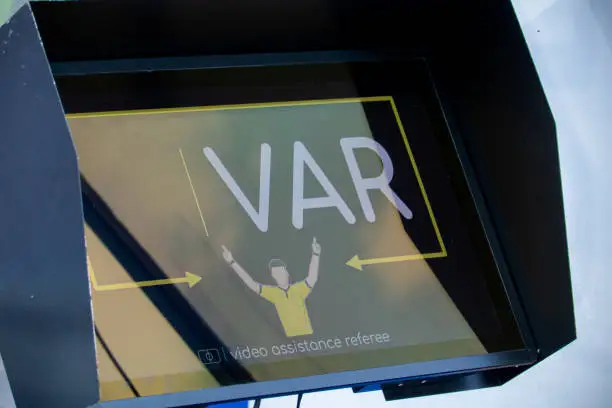

Introducción
En el mundial de Qatar 2022, la tecnoligia tuvo un papel muy importante para mejorar la precision en el arbitraje, el rendimineto de los jugadores y la expereincia de los aficionados
Fuera de juego semiautomatico
Este sistema detecta automaticamente si un jugador esta en fuera de juego utilizando camaras y sensores instalados en el estadio y en el balon

VAR(Video Assistant Referee)
El VAR permite revisar jugadas importantes mediante repeticiones en video para ayudar a los arbitros a tomar mejores deciciones

Balon inteligente
El balon oficial del Mundial tenia un sensor interno que enviaba datos en tiempo real sobre su movimiento

Estadios inteligentes
Los estadios conataban con aire acondicionado, iluminacion moderna y tecnologia avanzada